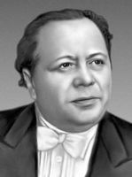

Натан Рахлин

Натан Рахлин родился 28 декабря 1905 (10 января 1906) года в Сновске (ныне в Черниговской области Украины), в бедной еврейской семье.
В раннем детстве освоил скрипку, играл в клезмерском ансамбле, в семь лет стал работать музыкантом в местном кинотеатре. В начале 1920-х годов служил трубачом в РККА, в бригаде Г. Котовского, с 1922 — участник духового оркестра Высшей военной школы в Киеве.
В 1923—1927 годах учился в Киевской консерватории (ныне Национальная музыкальная академия Украины имени П. И. Чайковского) (класс скрипки Д. С. Бертье). В 1930 году окончил Высший музыкально-драматический институт им. Н. Лысенко (ныне Киевский национальный университет театра, кино и телевидения имени И. К. Карпенко-Карого) (класс дирижирования А. И. Орлова). В 1931—1935 годах заочно обучался музыкально-теоретическим предметам и композиции у М. О. Штейнберга (Ленинград). Также посещал высшие дирижёрские курсы в Харькове, где учился у Г. Б. Адлера[2].
Ната́н Григо́рьевич Ра́хлин (укр. Натан Григорович Рахлін; 1905\1906 — 1979) — советский, украинский и российский дирижёр, педагог. Народный артист СССР (1948)[1]. Лауреат Сталинской премии второй степени (1952).
Натан Рахлин
По окончании обучения в Киеве был дирижёром первого симфонического оркестра на Радио в Харькове (1932—1934), работал в Куйбышеве (1934—1935), был инициатором создания, художественным руководителем и главным дирижёром симфонического оркестра в Сталинской филармонии (ныне Донецкая филармония) (1935—1937).
В 1937—1941 и 1946—1962 годах — главный дирижёр Государственного симфонического оркестра Украинской ССР в Киеве.
В 1941—1945 годах — главный дирижёр Государственного академического симфонического оркестра СССР (Москва).
В 1957—1960 годах — художественный руководитель Симфонического оркестра Московской филармонии.
В качестве гастролёра работал с Симфоническим оркестром Ленинградской филармонии, Большим симфоническим оркестром Всесоюзного радио и Центрального телевидения (ныне Большой симфонический оркестр имени П. И. Чайковского) и другими оркестрами.
В 1966 году по приглашению Н. Г. Жиганова переехал в Казань, став главным дирижёром и художественным руководителем только что созданного Государственного симфонического оркестра Татарской АССР Татарской филармонии, где работал до конца жизни. За годы работы сформировал и воспитал коллектив, исполнил значительную часть мирового симфонического репертуара, часто гастролировал с оркестром.
В 1938—1966 годах (с перерывом) преподавал в Киевской консерватории (с 1946 — профессор). В 1967—1979 годах — профессор Казанской консерватории (ныне — имени Н. Жиганова). Среди его учеников — В. Д. Куценко и др.
Член ВКП(б) с 1947 года.
Умер в Казани 28 июня 1979 года. Похоронен в Киеве на Байковом кладбище[3].